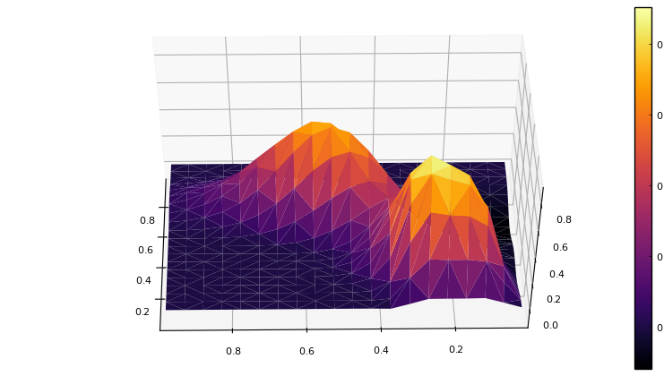

Finite Volume: Advection
The script file: example-advection1d-fv.jl, example-advection2d-fv.jl
The finite volume method can also be used for some problems. One key difference is that the PDE will be input in the form of a conservation equation rather than the weak form. Also, variables used with FV should be defined as averages on cells rather than nodal values, though there is some ability to interpolate between them as needed.
The following description is for the 2D case. Begin by importing and using the Finch module. Then initialize. The name here is only used when generating code files.
using Finch
initFinch("FVadvection2d");Then set up the configuration. This example sets dimensionality of the domain and the solver type(FV).
domain(2) # dimension
solverType(FV) # FV for finite volumeUse the built-in simple mesh generator to make the mesh and set up all node mappings.
n = 15 # number of elements in each direction
mesh(QUADMESH, elsperdim=n, bids=4)Define the variable and coefficient symbols. Note the use of CELL to define this variable as cell averages.
u = variable("u", location=CELL)
coefficient("a", ["cos(pi*x/2)","sin(pi*x/2)"], type=VECTOR) # advection velocityThe boundary condition is specified.
boundary(u, 1, FLUX, "(abs(y-0.2) < 0.11) ? sin(2*pi*t)^2 : 0") # x=0
boundary(u, 2, NO_BC) # x=1
boundary(u, 3, NO_BC) # y=0
boundary(u, 4, NO_BC) # y=1The PDE must be in a conservation form.
# The conservation type equation
# The "upwind" function applies upwinding to the term (a.n)*f with flow velocity a.
# The optional third parameter is for tuning. Default upwind = 0, central = 1. Choose something between these.
conservationForm([u, v, w], ["surface(upwind(a,u))", "surface(upwind(a,v))", "surface(upwind(a,w))"]) Here the upwind(a,u) function applies upwinding to the advective term (a.n)u with advection velocity a. An optional third parameter is for tuning. Default upwind = 0, central = 1. Choose something between these.
If you wish to inspect or modify the generated code, use the exportCode function. To then use the previously exported code, rather than generating new code, use importCode.
exportCode("fvad2dcode") # exports to fvad2dcode.jlFinally, solve for u.
solve(u);End things with finalizeFinch() to finish up any generated files and the log.